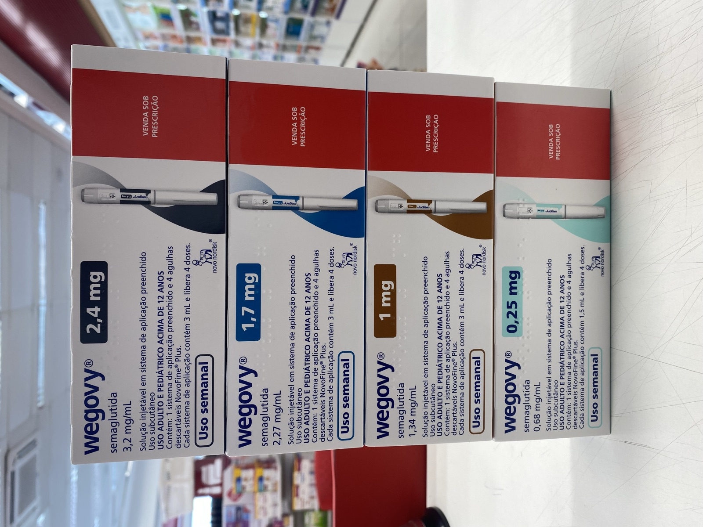

GLP-1 Drugs: What the Evidence Shows, Organ by Organ
SCIENCE & TECHNOLOGY · OCTOBER 7, 2026 · updated October 7, 2026

This is a living page. GLP-1 drugs, the semaglutide and tirzepatide family, keep getting credited with benefits that have nothing to do with the scale, and a new claim lands every few weeks. Rather than write a fresh post each time, I'll keep this scorecard current: every claimed benefit, what kind of study stands behind it, and how much weight it can bear. The two longer pieces on the Regimen are the detail behind it: the benefit list and what happens when people stop. This is reporting on published research, not medical advice. Last updated October 7, 2026.
The scorecard at a glance
The full write-up
The old way to talk about these drugs was simple: they treat diabetes and obesity, and people lose weight. The list since then has grown in a way that is both impressive and easy to oversell. The honest way to read it is by rung. At the top are trials that randomized thousands of people and counted events that matter, such as kidney failure or a heart attack. In the middle are studies that show a plausible mechanism in a small number of people. At the bottom are cohort studies, which compare people who happened to take a drug with people who happened not to.
The newest claim: younger organs, by a blood test
On October 7 Eric Topol posted that semaglutide “consistently reduced proteomic organ age 2-4 years for the heart, artery, and kidney clocks across 5 placebo-controlled trials.” The source is a preprint, Semaglutide reduces proteomic organ-specific biological age across randomized clinical trials, posted on Research Square on September 22 and not yet peer reviewed.
What the abstract says: the authors analysed blood proteomics (levels of thousands of circulating proteins) from 10,052 participants across five placebo-controlled semaglutide trials, naming SELECT, STEP-HFpEF, STEP-HFpEF DM, FLOW and SOUL. They applied organ-specific mortality clocks that were trained elsewhere on other cohorts; each is a pattern of proteins that predicts who is likelier to die, read off as an “age.” Semaglutide lowered the heart’s biological age by about 2 to 4 years against placebo, and the kidney, brain, pancreas, lung and multi-organ clocks by 1 to 4 years. Frailty and cardiometabolic risk scores also improved over up to 156 weeks. The effects were not fully explained by weight loss, blood sugar or C-reactive protein, and an exploratory analysis suggested heart-age change could account for 34% to 49% of effects on some outcomes.
What it does not say, in the authors’ own words: the results support using these scores as a treatment-response readout “without establishing biological rejuvenation, causal mediation or surrogate validity.” A clock that moves is not the same as a person who is 3 years younger. It is a reason to expect the already-proven cardiovascular benefit to show up in the blood, and it fits the SELECT and FLOW results, which are the outcomes trials two of the five datasets come from. Because the datasets are those same trials, this is also less independent than “five trials” sounds. I have only read the abstract and Topol’s post, not the full methods, so I cannot say how the clocks were calibrated for these populations.
Update log
- October 7, 2026. Page created from the Regimen’s two GLP-1 posts, with the September 22 organ-age preprint (via Eric Topol’s October 7 post) added as the newest row. Abstract read; full text not.
Where I could be wrong
- I read the preprint’s abstract, not its methods. The 2 to 4 year figures and the 34% to 49% mediation range are as the authors state them; I have not checked how the clocks were applied or how the five trials’ data were combined.
- Topol’s summary and the abstract differ slightly. His post names heart, artery and kidney clocks; the abstract names heart, kidney, brain, pancreas, lung and multi-organ. I have used the abstract for the numbers.
- The grades are mine. Putting REMODEL at “early” and the VA studies at “observational” is a judgement about study design; reasonable readers could rank them differently.
- Different drugs, doses and populations. Semaglutide 1.0 mg, 2.4 mg and tirzepatide trials are stacked in one table; a benefit shown for one is not shown for the class.
Sources
- Dermit M, Colhoun HM, Goeminne LJE, Ryan D, Adelborg K, Belmont-Rausch D, et al. Semaglutide reduces proteomic organ-specific biological age across randomized clinical trials. Research Square preprint, posted September 22, 2026, not peer reviewed. rs-11082091
- Eric Topol (@EricTopol). Post on X, October 7, 2026. x.com
- Perkovic V, Tuttle KR, Rossing P, et al. Effects of Semaglutide on Chronic Kidney Disease in Patients with Type 2 Diabetes (FLOW). N Engl J Med, 391:109-121, 2024. doi:10.1056/NEJMoa2403347
- Lincoff AM, Brown-Frandsen K, Colhoun HM, et al. Semaglutide and Cardiovascular Outcomes in Obesity without Diabetes (SELECT). N Engl J Med, 389:2221-2232, 2023. doi:10.1056/NEJMoa2307563
- Sanyal AJ, Newsome PN, Kliers I, et al. Phase 3 Trial of Semaglutide in Metabolic Dysfunction-Associated Steatohepatitis (ESSENCE). N Engl J Med, 392:2089-2099, 2025. doi:10.1056/NEJMoa2413258
- Malhotra A, Grunstein RR, Fietze I, et al. Tirzepatide for the Treatment of Obstructive Sleep Apnea and Obesity (SURMOUNT-OSA). N Engl J Med, 391:1193-1205, 2024. doi:10.1056/NEJMoa2404881
- Bjornstad P, Tuttle KR, et al. REMODEL, presented at the World Congress of Nephrology, Yokohama, 2026. PMC12559791
- The Regimen. The GLP-1 Benefit List Keeps Growing (October 2, 2026) and Does Stopping a GLP-1 Drug Raise Your Heart Risk? (September 22, 2026), which cite the VA addiction, VA discontinuation and dementia cohort studies in full.